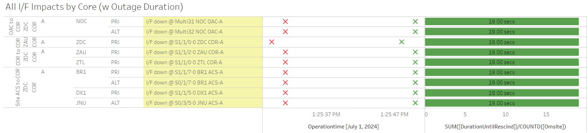

Weekly Highlights 20240626-20240703
6/26 - ZTL Comm Outage (MR-189417A / ISR 0626-1840)
- 6/26 17:14 - Major comm impact affecting both
rings at ZTL WCN for
MR-189417A - Multiple circuits OTS for L3 to move cables & circuits to support POP move; ref LIR 44236921 - Extended outaged changed to
ISR 0626-1840; ref LAD 821841924 - During outage, received recurring SE 738 CV-GUS Comm Fail with BR2 for all C&Vs
- All lines cleared at 6/26 22:52 (~20243 seconds)

6/27 - ZOB WRE-B Freq Std Replaced
- 6/27 18:42 - ZOB WRE-B returns to Maintenance for
Freq Std replacement; restored to Normal
at 6/27 20:29
- ZOB WRE-B - 6/21-6/27 - Freq Std failed
6/27 - OTZ WRS Temperature Spikes
- 6/27 03:29 - OTZ WRS temperature spike caused SE 309 for all WREs; temperatures dropped by morning
- 6/28 02:46 - OTZ WRS temperature spike caused SE
309 for all WREs; temperatures dropped by
morning;
bldg vent was stuck closed and has now been cleared. Fans are running.-- ref LAD 822739124
6/27 - SE 738 Comm Fail to BR2
- 6/27 04:51 - All C&Vs alerting with SE 738 CV-GUS Comm Fail to BR2 every ~5 min and rescinding after a few seconds; Occassionally AP1 would also issue a SE 500 Comm Status Change BR2
- 6/29 20:24 - GUS Switchover - G30 - BR2 to Primary / AP1 to Backup to replace L1 Test Translator; after switchover BR2 started alarming again with SE 738 CV-GUS Comm Fail to BR2 every ~5 min and rescinding after a few seconds starting at 6/29 21:15...
- 7/1 14:42 - GUS Switchover - G30 - AP1 to Primary / BR2 to Backup to address SE 738 loudmouth; Reset and restored to Backup at 7/1 18:10
- 7/1 17:34 - BR2 GUS to Maintenance and Control
Powered to address SE 738 issue; ref LIR
824828924; restored to Backup
at 7/1 18:09
- Status logs were filling up with
RDSP_MAIN.c:6067 ... RDSP AIX E-RD_HDRSDEPLETED "Transfer headers depleted; record ID 353 not transfered"
- Status logs were filling up with
6/27 - BRW ACS-B Configured
- 6/27 18:06 - BRW ACS-B configured and comms restored; Ring 2 PRI cleared / Ring 2 ALT to ZLA (FTIH-WS-053531) did not clear, more troubleshooting required...
6/29 - AP1 GUS L1 Test Translator Replaced
- 6/29 20:08 - AP1 GUS received SE 199 L1 Test
Translator Failure while in Primary Mode;
Upon investigation the L1 TLT display was flashing on and off and was unresponsive to commands - 6/29 21:35 - AP1 returns to Maintenance after L1 Test Translator replacement; restored to Backup at 6/29 23:43 after faulting several times
- 7/1 14:42 - GUS Switchover - G30 - AP1 to Primary / BR2 to Backup to address SE 738 loudmouth; Reset and restored to Backup at 7/1 18:10
- 7/1 17:34 - BR2 GUS to Maintenance and Control Powered to address SE 738 issue; ref LIR 824828924; restored to Backup at 7/1 18:09
6/30 - ZOB WRE-A Power Panel Work
- 6/30 01:32 - ZOB WRE-A shutdown for Power Panel work; ref LIR 815524524; restored to Normal at 6/30 06:26
6/30 - ZAN WRE-C Fault
- 6/30 15:58 - ZAN WRE-C faulted with SEs 29,30,52,53,59; Control Powered and restored to Normal at 6/30 17:16
7/3 - BR1 GUS Fault (C1 KPA Low Airflow Sensor)
- 7/3 12:43 - BR1 GUS Faulted with SE 191 C1 KPA Fault; ref LCM 44252421; Control Powered and restored to Backup at 7/3 15:38
- 7/4 00:42 - BR1 GUS Faulted with SE 191 C1 KPA
Fault;
Low airflow sensor replaced; ref LAD 826562424; Control Powered and restored to Normal at 7/4 02:41
Various Comm Impacts
* Does not include single-line impacts <60 seconds which do not cause an outage
Other Sites
- 6/26 08:00 - OTZ Ring 1 ALT comms flapping; last event cleared at 6/26 08:26 (~175 seconds total)
- 6/26 08:01 - BRW Ring 1 ALT comms flapping; last event cleared at 6/26 08:26 (~86 seconds total)
- 6/27 05:05 - YWG Ring 1 PRI / Ring 2 ALT comms down hard; both lines cleared at 6/27 05:09 (~228 seconds)
- 6/27 08:02 - OTZ Ring 1 ALT + BET Ring 1 ALT / Ring 2 PRI comms flapping; last events cleared 6/27 08:11 (~40 seconds total)
- 6/27 13:45 - YFB Ring 1 comms flapping; last event cleared at 6/27 15:34 (~1058 seconds total)
- 6/27 15:31 - ZSU Ring 1 ALT / Ring 2 PRI comms took a ~45 second hit
- 6/27 17:10 - CM1 Ring 1 ALT / Ring 2 PRI comms took a ~20 second hit
- 6/27 19:12 - HNL Ring 2 PRI comms flapping; last event cleared at 6/27 19:23 (~362 seconds total)
- 6/27 21:39 - MMX Ring 1 comms cleared (~320232 seconds; down since 6/21)
- 6/28 19:27 - CM1 Ring 1 ALT / Ring 2 PRI + YFB Ring 2 comms down hard; all lines cleared at 6/30 03:55 (~116816 seconds)
- 6/30 02:23 - YFB Ring 1 comms flapping; last event cleared at 6/30 02:37 (~241 seconds total)
- 6/30 06:29 - YQX Ring 1 PRI comms down hard; line cleared at 6/30 14:39 (~29413 seconds)
- 7/1 11:23 - YWG Ring 1 PRI / Ring 2 ALT comms took a ~40 second hit
- 7/1 13:25 - Multiple sites impacted by ZDC Ring 1 comm hit lasting ~20 seconds

- 7/1 17:29 - JNU Ring 1 PRI / Ring 2 ALT comms down hard; both lines cleared at 7/1 17:32 (~123 seconds)
- 7/1 20:56 - YQX Ring 1 PRI comms down hard; line cleared at 7/1 22:16 (~4817 seconds)
- 7/3 17:16 - AP1 Ring 1 ALT / Ring 2 PRI + ZOA Ring 1 ALT / Ring 2 PRI comms took ~45 second hits
- 7/3 20:02 - HNL Ring 1 ALT / Ring 2 PRI comms took a ~97 second hit
- 7/4 14:24 - YFB Ring 1 comms down hard; line cleared at 7/4 14:29 (~330 seconds)
SSM-WAAS-066 Circuits Outstanding
- OTZ - Following circuits not delivered
/ SA'd
- Ring 1 PRI to ZAU - FTIH-WS-053504
- Ring 2 PRI to ZLA - FTIH-WS-053508
- Ring 2 ALT to ZLA - FTIH-WS-053509
- BRW - Ring 2 ALT to ZLA -
FTIH-WS-053531
- 5/23 - BRW ACS-B Router replaced
- 5/23 17:35 - BRW Ring 2
PRI comms down
hard --
ISR 0521-0090; ref LIR 802755624 --On hold until FAA tech can configure ACS-B router - Troubleshooting ongoing...
MMX - Both Rings
- 7/2 01:36 - MMX Ring 1 comms down hard...
MTP - Both Rings
- 3/14 23:20 - MMD, MMX, MTP Ring 1 down
hard -- MTP / MMD OFFLINE; MMX has
partial RG1 on Ring 1 and is
flapping to No Data Reported; ref LIR
764089024 --
Elevated to Level 2. Fires have damaged lines. Local TELCO addressing issues. - 5/15 18:16 - All Ring 1 Mexico comms down hard; all Mexico OFFLINE; ref LIR 798370024; all lines except MTP/MSD Ring 1 cleared at 5/16 01:07 (~128679 seconds for MPR/MMX; ~450104 seconds for MMD)
MSD - Both Rings
- 4/25 15:38 - MSD Ring 1 comms down hard...
List of current offline WREs
List of current offline WREs -- ref WAAS Status Monitor
All Depot shipments to Mexico are halted until the customs process can be finalized
- MMX WRE-C - 5/15-... - Processor failed and could not be restored
- MPR WRE-B - 5/3-... - Inits failing -- looks like a bad freq std; due to shipping issues, there is no spare Freq Std and no ETA to recover WRE-B...
- MTP WRE-B - 7/21/23-... - MTP WRE-B repaired during site visit 5/10/24, but no comm to the site to verify WRE to Normal...
5/11/23-... - MX Ring 2 Satcom Upgrade
MX WAAS Sites comm upgrades in progress:
- 6/5 - Troubleshooting at ZLA-Tijuana shows 4 of 5 circuits have a telco issue localized to Tijuana that must be resolved by FTI; for the MSD circuit, Tijuana could see a loop from ZLA, but ZLA could not see the loop locally -- possible cable issue at ZLA
- Frequentis coordinating with SENEAM at TJX to complete end-to-end testing from remote site to TJX
- After successful testing to TJX; comms should come up at ZLA (if not, coordinate with FTI Harris)
- MMX Ring 2 is currently green, but no UDP packets are coming through

Major Events


Comm Events


Weekly Highlights 20240703-20240710
7/3 - BR1 GUS Fault (C1 KPA Low Airflow Sensor)
- 7/3 12:43 - BR1 GUS Faulted with SE 191 C1 KPA Fault; ref LCM 44252421; Control Powered and restored to Backup at 7/3 15:38
- 7/4 00:42 - BR1 GUS Faulted with SE 191 C1 KPA
Fault;
Low airflow sensor replaced; ref LAD 826562424; Control Powered and restored to Normal at 7/4 02:41
7/5 - DX1 Fault from Primary
- 7/5 10:30 - GUS Switchover - SM9 - DX1 GUS Faulted from Primary with SE 193 C5 KPA Fault / SZ1 GUS to Primary; Control Powered and restored to Backup at 7/5 12:23
- 7/6 11:14 - GUS Switchover - SM9 - DX1 to Primary / SZ1 to Backup due to road closure at SZ1 GUS
7/9 - MMX / MTP Ring 1 Temporarily Restored
- 7/9 20:28 - MTP / MMX Ring 1 Serial comms cleared
- MTP comms down since 4/25/24 (~2 million seconds)
- MMX comms down since 7/1/24 (~673k seconds)
- 7/9 21:14 - MTP WREs A and B restored to Normal after comm restoration
- 7/9 21:46 - MTP / MMX Ring 1 Serial comms down hard...
7/9 - ZDC WRE-B Fault
- 7/9 23:46 - ZDC WRE-B faulted with SE 54 Rcvr Comm Fault; Control Powered and restored to Normal at 7/10 00:28
7/10 - BRW WRE-B Periodic Maintenance
- 7/10 00:36 - BRW WRE-B to Maintenance for
periodic maintenance-- ref LIR 829009124; restored to Normal at 7/10 01:50
7/10 - BR2 to Primary
- 7/10 07:01 - GUS Switchover - G30 - AP1 to Backup / BR2 to Primary to verify SE 738 no longer occurring in Primary mode
Various Comm Impacts
* Does not include single-line impacts <60 seconds which do not cause an outage
Other Sites
- 7/3 17:16 - AP1 Ring 1 ALT / Ring 2 PRI + ZOA Ring 1 ALT / Ring 2 PRI comms took ~45 second hits
- 7/3 20:02 - HNL Ring 1 ALT / Ring 2 PRI comms took a ~97 second hit
- 7/4 14:24 - YFB Ring 1 comms down hard; line cleared at 7/4 14:29 (~330 seconds)
- 7/8 14:12 - ZSU Ring 1 PRI / Ring 2 ALT comms down hard; both lines cleared at 7/8 14:17 (~328 seconds)
- 7/9 17:05 - CM1 Ring 1 ALT / Ring 2 PRI + YFB Ring 2 comms down hard; all lines cleared at 7/9 18:36 (~5480 seconds)
- 7/9 19:16 - JNU Ring 1 PRI / Ring 2 ALT comms took a ~20 second hit
- 7/9 22:08 - ZHU Ring 1 PRI / Ring 2 ALT comms down hard; both lines cleared at 7/10 17:20 (~69139 seconds)
- 7/10 09:41 - CM1 Ring 1 ALT / Ring 2 PRI + YFB Ring 2 comms flapping; all lines cleared at 7/10 10:23 (~1173 seconds total)
SSM-WAAS-066 Circuits Outstanding
- OTZ - Following circuits not delivered
/ SA'd
- Ring 1 PRI to ZAU - FTIH-WS-053504
- Ring 2 PRI to ZLA - FTIH-WS-053508
- Ring 2 ALT to ZLA - FTIH-WS-053509
- BRW - Ring 2 ALT to ZLA -
FTIH-WS-053531
- 5/23 - BRW ACS-B Router replaced
- 5/23 17:35 - BRW Ring 2
PRI comms down
hard --
ISR 0521-0090; ref LIR 802755624 --On hold until FAA tech can configure ACS-B router - Troubleshooting ongoing...
MMX - Both Rings
- 7/9 21:46 - MTP / MMX Ring 1 Serial comms down hard...
MTP - Both Rings
- 7/9 21:46 - MTP / MMX Ring 1 Serial comms down hard...
MSD - Both Rings
- 4/25 15:38 - MSD Ring 1 comms down hard...
List of current offline WREs
List of current offline WREs -- ref WAAS Status Monitor
All Depot shipments to Mexico are halted until the customs process can be finalized
- MMX WRE-C - 5/15-... - Processor failed and could not be restored
- MPR WRE-B - 5/3-... - Inits failing -- looks like a bad freq std; due to shipping issues, there is no spare Freq Std and no ETA to recover WRE-B...
- MTP WRE-B - 7/21/23-... - MTP WRE-B repaired during site visit 5/10/24, but no comm to the site to verify WRE to Normal...
5/11/23-... - MX Ring 2 Satcom Upgrade
MX WAAS Sites comm upgrades in progress:
- 6/5 - Troubleshooting at ZLA-Tijuana shows 4 of 5 circuits have a telco issue localized to Tijuana that must be resolved by FTI; for the MSD circuit, Tijuana could see a loop from ZLA, but ZLA could not see the loop locally -- possible cable issue at ZLA
- Frequentis coordinating with SENEAM at TJX to complete end-to-end testing from remote site to TJX
- After successful testing to TJX; comms should come up at ZLA (if not, coordinate with FTI Harris)
- MMX Ring 2 is currently green, but no UDP packets are coming through

Major Events


Comm Events